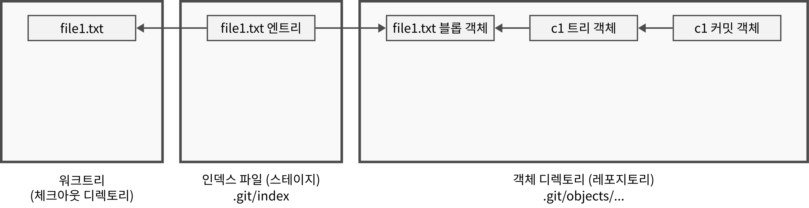

cd $HOME/lab
rm -rf test_internal_01
git init test_internal_01
cd test_internal_01내부 구조
- 기본 명령인 add, commit이 내부적으로 어떤 구조로 처리되는지 알아본다.
정보 저장 위치
- 스테이지와 레포지토리 내의 정보는 다음 두 가지 형태로 저장된다.
- 인덱스(index): 스테이지의 정보 목록을 저장하는 하나의 파일
- 객체(object): 스테이지 및 레포지토리의 파일과 디렉토리 내용을 저장하는 복수의 파일들
인덱스
- 인덱스는
.git디렉토리 아래에index라는 이름으로 저장되는 바이너리 파일이다. - 저장할 파일이 add 명령으로 스테이지에 들어가면
- 우선 파일의 내용을 블롭 객체라는 형태로 저장하고
- 해당 파일에 대한 포인터 정보를 인덱스 엔트리(index entry)라는 형식으로 인덱스 파일에 저장한다.
- 커밋된 이후에도 인덱스 파일내의 엔트리 정보는 사라지지 않는다.
인덱스 엔트리
- 인덱스 엔트리는 다음과 같은 정보를 포함한다.
- 워크트리에 있는 실제 파일에 대한 정보
- 객체로 저장된 파일내용에 대한 포인터(해시값) 정보
객체
- 객체 파일은 파일의 내용 자체 또는 디렉토리의 구조(파일/서브디렉토리 목록) 등을 저장하는 ‘.git/objects’ 디렉토리 아래의 바이너리 파일이다.
- 객체 파일의 종류에는 블롭 객체, 트리 객체, 커밋 객체가 있다.
- 파일이 add 명령으로 스테이지에 들어가면 파일의 내용은 블롭(blob) 객체 파일에, 디렉토리의 내용은 트리(tree) 객체 파일에 저장된다.
- 파일이 commit 명령으로 레포지토리에 기록되면
- 해당 커밋에 포함되는 디렉토리들의 정보를 저장하는 트리 객체들을 만들고
- 이 트리 객체들과 블롭 객체들을 가리키는 포인터(해시) 정보를 포함하는 커밋(commit) 객체가 만들어진다.
객체 파일의 해시값
- 모든 객체는 이름(아이디)으로 sha1 해시값 40글자를 가짐
- git에서 객체를 가리키는 포인터 정보라고 함은 이 해시값을 말한다.
- 객체의 종류에 따라 해시 계산 방법이 다름
- 블롭 객체의 해시값은 파일의 내용만(파일 이름도 사용하지 않음!) 사용하여 계산하므로 파일 내용이 같으면 해시값도 같음
- 트리 객체의 해시값은 해당 디렉토리에 있는 파일/서브디렉토리 이름/속성 정보를 사용하여 계산하므로 이 내용이 같으면 해시값도 같음
- 커밋 객체의 해시값은 작성자 정보, 작성 시간 정보 등을 통합하여 계산하므로 커밋 내용이 같아도 해시값이 달라질 수 있음
객체 파일의 저장 위치
- 객체는
.git/objects디렉토리 아래에 서브디렉토리로 나뉘어서 파일형태로 저장 - 디렉토리를 분산하기 위해 40글자 sha1 해시값 중 첫 2글자를 디렉토리 이름으로 하고 나머지 38글자를 파일이름으로 저장
객체의 저장 형식
- zlib으로 압축된 바이너리 파일
- 객체를 hex 에디터로 보면 앞부분이 zlib DEFLATE 형식(0x78 0x9C)으로 시작함
객체 관련 명령
저장소 전체의 객체 목록을 보는 법
git cat-file --batch-check --batch-all-objects --unordered객체 하나의 유형을 보는 법
git cat-file -t 해시값객체 하나의 파싱 정보를 보는 법
git cat-file -p 해시값객체의 내용 정보를 원 바이트열 그대로 보고 싶을 때는 zlib 압축을 풀 수 있는 도구가 있어야 한다.
- 예를 들어 “qpdf” 애플리케이션을 설치하면
zlib-flate -uncompress명령으로 객체 내용을 볼 수 있다. - 단, 이 경우에는 바이너리 바이트열을 그대로 보여주므로 콘솔에서 문자로 잘 표시되지 않을 수 있다.
- 예를 들어 “qpdf” 애플리케이션을 설치하면
실습 1
- 레포지토리 생성
Initialized empty Git repository in ~/lab/test_internal_01/.git/
tree .git.git
├── config
├── description
├── HEAD
├── hooks
│ ├── applypatch-msg.sample
│ ├── commit-msg.sample
│ ├── fsmonitor-watchman.sample
│ ├── post-update.sample
│ ├── pre-applypatch.sample
│ ├── pre-commit.sample
│ ├── pre-merge-commit.sample
│ ├── pre-push.sample
│ ├── pre-rebase.sample
│ ├── pre-receive.sample
│ ├── prepare-commit-msg.sample
│ ├── push-to-checkout.sample
│ ├── sendemail-validate.sample
│ └── update.sample
├── info
│ └── exclude
├── objects
│ ├── info
│ └── pack
└── refs
├── heads
└── tags
9 directories, 18 filesecho "file1 line1" > file1.txtgit status -uallOn branch main
No commits yet
Untracked files:
(use "git add <file>..." to include in what will be committed)
file1.txt
nothing added to commit but untracked files present (use "git add" to track)
git add file1.txttree .git.git
├── config
├── description
├── HEAD
├── hooks
│ ├── applypatch-msg.sample
│ ├── commit-msg.sample
│ ├── fsmonitor-watchman.sample
│ ├── post-update.sample
│ ├── pre-applypatch.sample
│ ├── pre-commit.sample
│ ├── pre-merge-commit.sample
│ ├── pre-push.sample
│ ├── pre-rebase.sample
│ ├── pre-receive.sample
│ ├── prepare-commit-msg.sample
│ ├── push-to-checkout.sample
│ ├── sendemail-validate.sample
│ └── update.sample
├── index
├── info
│ └── exclude
├── objects
│ ├── 0b
│ │ └── 11cfca50e35a4865e8505f1a108bd23a3f9401
│ ├── info
│ └── pack
└── refs
├── heads
└── tags
10 directories, 20 files
블롭 객체
블롭 객체의 내용
- 파일의 내용(바이트 스트림)만 저장
- 커밋이 아닌 스테이징 시점에 생성되고 커밋되면 트리 객체에서 참조하게 됨
- 파일명, 모드, 권한, 타임스탬프 등의 메타데이터 포함하지 않음
- 파일명과 모드는 블롭 객체가 아닌 트리 객체에 저장됨
블롭 객체의 해시값
- “blob <바이트길이>\0<데이터바이트>” 형식의 바이트열을 sha1 계산
미참조 블롭 (dangling blob)
- 파일이 스테이징되어 블롭 객체가 생성되었는데 커밋되지 않고 취소가 되면 해당 파일의 블롭 객체는 인덱스 파일이나 다른 객체에게 참조되지 않고 남아있음
- 이렇게 아무도 참조하지 않는 블롭 객체를 미참조 블롭(dangling blob)이라고 함
- 미참조 블롭 객체가 많으면 디스크 용량을 많이 차지함
- 시간이 지나면 자동으로 지워지지만
git gc명령으로 명시적 삭제 가능
실습 2: 블롭 객체 조사
git cat-file --batch-check --batch-all-objects --unordered0b11cfca50e35a4865e8505f1a108bd23a3f9401 blob 12git cat-file -t 0b11cfca50e35a4865e8505f1a108bd23a3f9401blobgit cat-file -p 0b11cfca50e35a4865e8505f1a108bd23a3f9401file1 line1zlib-flate -uncompress < ".git/objects/0b/11cfca50e35a4865e8505f1a108bd23a3f9401"blob 12file1 line1printf "file1 line1\n" | git hash-object -t blob --stdin0b11cfca50e35a4865e8505f1a108bd23a3f9401printf "blob 12\0file1 line1\n" | sha1sum0b11cfca50e35a4865e8505f1a108bd23a3f9401 -tree 객체
- 트리 객체는 하나의 디렉토리(서브디렉토리 미포함)에 포함된 파일과 서브디렉토리에 대한 해시값 정보
- 서브디렉토리가 존재하면 그에 해당하는 트리 객체가 추가적으로 존재
트리 객체의 내용
트리 객체의 내용은 엔트리 열로 구성됨
엔트리(entry)
- 하나의 파일 또는 서브디렉토리를 대표하는 정보
- 하나의 엔트리 내용은 “
<mode> <파일명>\0<해시값>”
엔트리 열
- 엔트리 정보를 이어붙인 “
<entry><entry><entry>...” 형식
- 엔트리 정보를 이어붙인 “
하나의 트리 객체 내용은 “
tree <크기>\0<엔트리 열>” 형식콘솔에서 정상 표시되지 않는 바이트열을 보고 싶으면 다음 파이썬 코드를 사용한다.
cat $HOME/get_tree_object_content.pyimport zlib
import sys
from pathlib import Path
def get_tree_object_content(data: bytes) -> bytes:
output = bytearray()
# 기존 헤더 ("tree <size>\x00") 그대로 복사
header_end = data.find(b"\x00")
output += data[: header_end + 1]
i = header_end + 1
# 각 엔트리 파싱 및 SHA를 .hex()로 변환
while i < len(data):
mode_end = data.find(b" ", i)
name_end = data.find(b"\x00", mode_end)
mode = data[i:mode_end]
name = data[mode_end + 1 : name_end]
sha_start = name_end + 1
sha_end = sha_start + 20
sha = data[sha_start:sha_end]
sha_hex = sha.hex().encode("ascii")
# 기존 구조 유지
output += b" " + mode + b" " + name + r"\0".encode() + sha_hex
i = sha_end
return bytes(output)
# .git/objects/xx/yyyyyy 에서 Git object 읽기
path = Path(".git", "objects", sys.argv[1][:2], sys.argv[1][2:])
with open(path, "rb") as f:
compressed = f.read()
raw = zlib.decompress(compressed)
result = get_tree_object_content(raw) + b"\n"
sys.stdout.buffer.write(result)트리 객체의 해시값
- tree 객체의 내용에 대해 SHA-1을 계산
커밋 객체
- 커밋 객체는 커밋 전체의 정보를 저장하는 객체
- 해당 커밋 시점의 전체 디렉토리 스냅샷을 저장
- 구성 요소
- 1개의 전역 트리 객체에 대한 해시값 정보
- 1개 이상의 부모 커밋 객체에 대한 해시값 정보
- 저자 정보 (커밋 시간 정보 포함)
- 커미터 정보 (커밋 시간 정보 포함)
- 커밋 메시지 정보
- 시간 정보의 경우 일반적으로는 저자의 커밋 시간과 커미터의 커밋 기간은 동일함
- 패치 파일을 사용하거나 리베이스, 체리픽 등을 한 경우 달라짐
실습 3: 커밋 객체와 트리 객체 생성
git commit -m c1[main (root-commit) 4199a82] c1
1 file changed, 1 insertion(+)
create mode 100644 file1.txtgit cat-file --batch-check --batch-all-objects --unordered0b11cfca50e35a4865e8505f1a108bd23a3f9401 blob 12
4199a828ee48b82acef1032616332e4646f50af7 commit 149
d6a665ff13b175d407fb943c946c4022017d4dd0 tree 37git cat-file -t d6a665ff13b175d407fb943c946c4022017d4dd0treegit cat-file -p d6a665ff13b175d407fb943c946c4022017d4dd0100644 blob 0b11cfca50e35a4865e8505f1a108bd23a3f9401 file1.txtzlib-flate -uncompress < ".git/objects/d6/a665ff13b175d407fb943c946c4022017d4dd0"tree 37100644 file1.txt
��P�ZHe�P_��:?�python $HOME/get_tree_object_content.py d6a665ff13b175d407fb943c946c4022017d4dd0tree 37 100644 file1.txt\00b11cfca50e35a4865e8505f1a108bd23a3f9401c1=$(git rev-parse HEAD)
echo $c14199a828ee48b82acef1032616332e4646f50af7git cat-file -t $c1commitgit cat-file -p $c1tree d6a665ff13b175d407fb943c946c4022017d4dd0
author user <user@company.com> 1755584213 +0900
committer user <user@company.com> 1755584213 +0900
c1
mkdir -p sub
echo "file2 line1" > sub/file2.txt
git add .git statusOn branch main
Changes to be committed:
(use "git restore --staged <file>..." to unstage)
new file: sub/file2.txt
git cat-file --batch-check --batch-all-objects --unordered0b11cfca50e35a4865e8505f1a108bd23a3f9401 blob 12
4199a828ee48b82acef1032616332e4646f50af7 commit 149
4a8d995103b41f561e547ce3b32e1983d424da22 blob 12
d6a665ff13b175d407fb943c946c4022017d4dd0 tree 37git commit -m c2[main c6c762a] c2
1 file changed, 1 insertion(+)
create mode 100644 sub/file2.txtgit cat-file --batch-check --batch-all-objects --unordered0b11cfca50e35a4865e8505f1a108bd23a3f9401 blob 12
4199a828ee48b82acef1032616332e4646f50af7 commit 149
4a8d995103b41f561e547ce3b32e1983d424da22 blob 12
4c2cf5eb3d8af11e9fe5f56cb6c853e1559d7166 tree 67
c6c762a824788dd896d9de6f71135f482d881a00 commit 197
d6a665ff13b175d407fb943c946c4022017d4dd0 tree 37
dd62677237dce0946aeffef97910ffc4ec32c3e7 tree 37git cat-file -p $(git rev-parse HEAD)tree 4c2cf5eb3d8af11e9fe5f56cb6c853e1559d7166
parent 4199a828ee48b82acef1032616332e4646f50af7
author user <user@company.com> 1755584215 +0900
committer user <user@company.com> 1755584215 +0900
c2git cat-file -p 4c2cf5eb3d8af11e9fe5f56cb6c853e1559d7166100644 blob 0b11cfca50e35a4865e8505f1a108bd23a3f9401 file1.txt
040000 tree dd62677237dce0946aeffef97910ffc4ec32c3e7 subgit cat-file -p dd62677237dce0946aeffef97910ffc4ec32c3e7100644 blob 4a8d995103b41f561e547ce3b32e1983d424da22 file2.txt